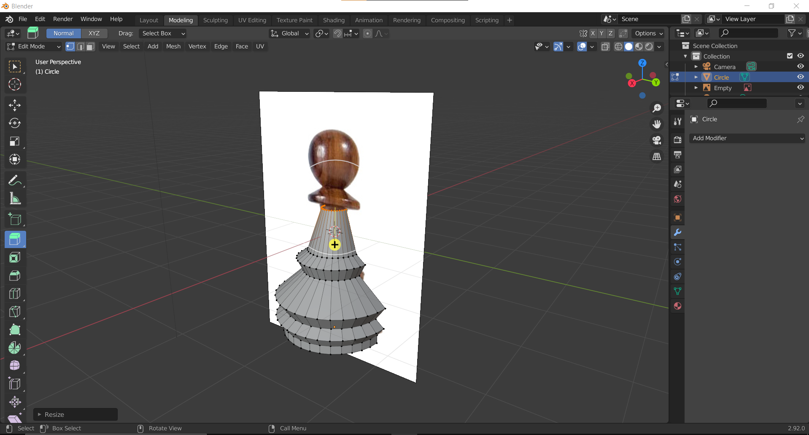
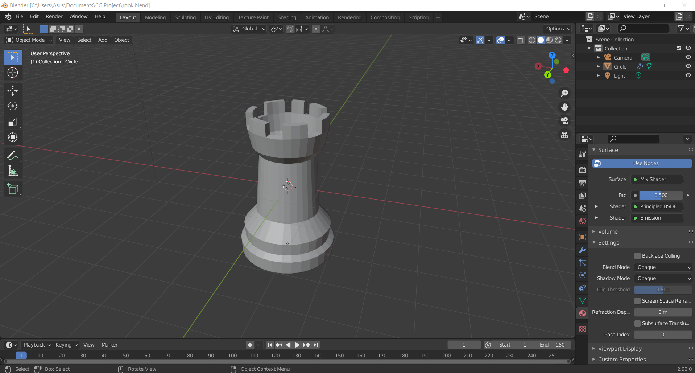
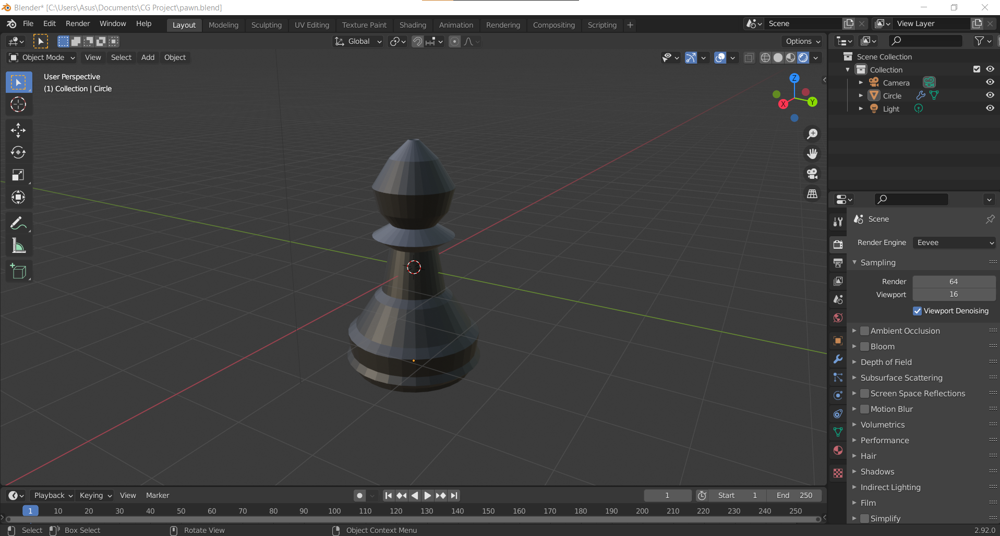
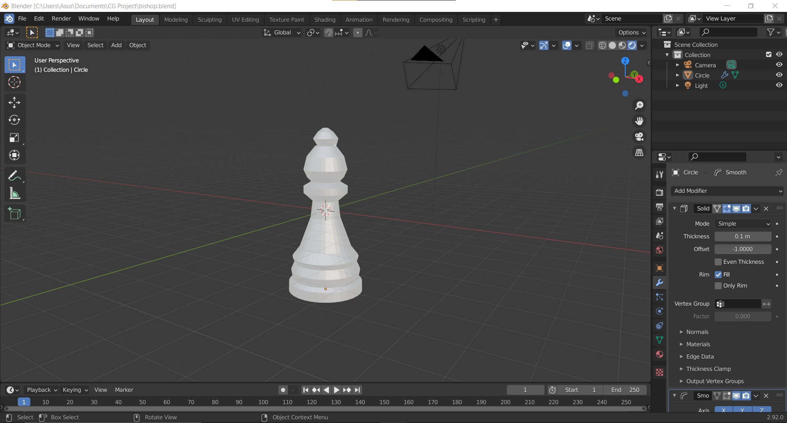
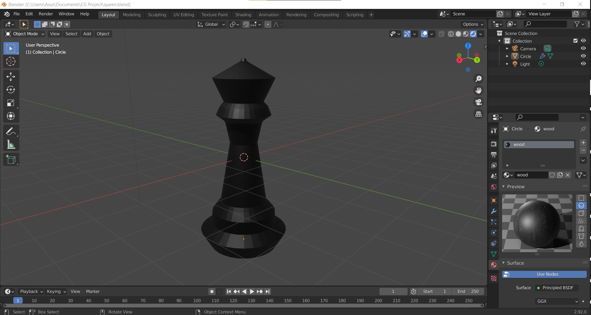
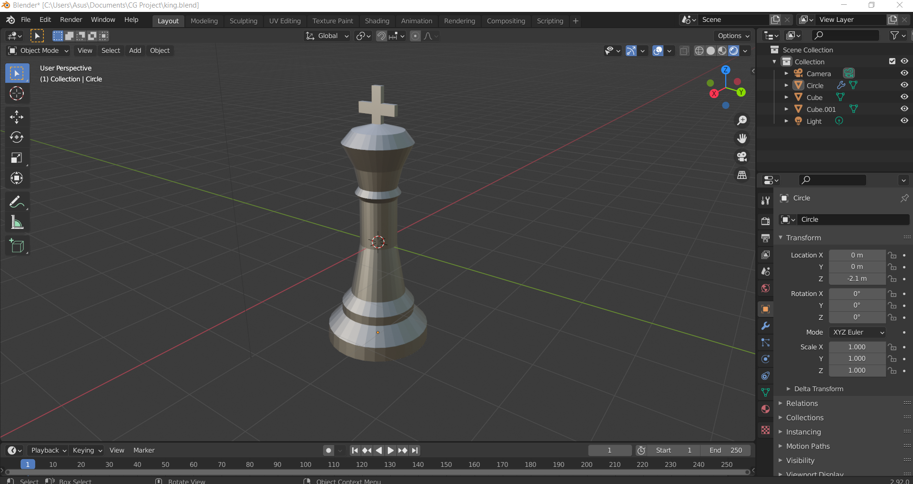
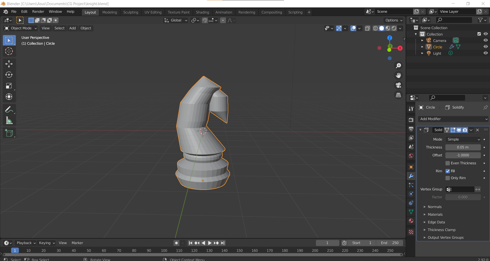
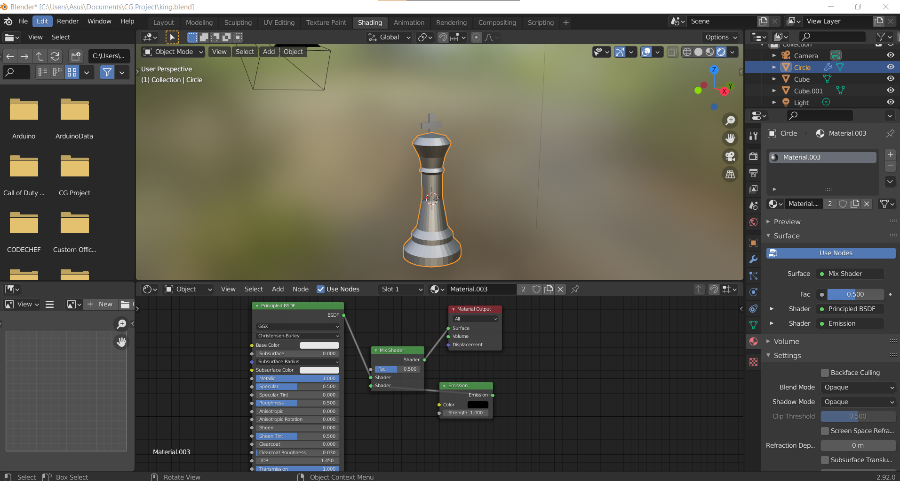
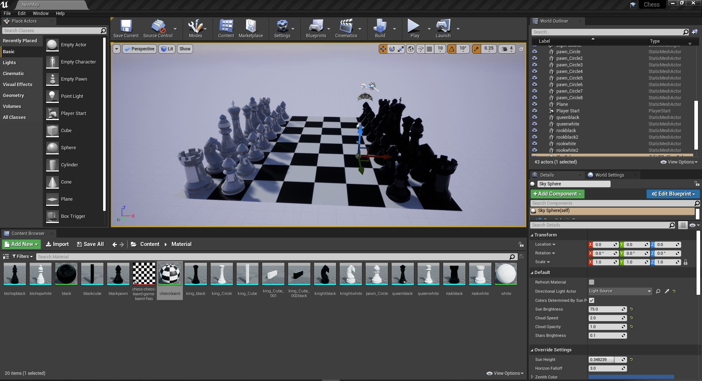

The assets were created using Blender 3D Modeling tool.
We started with creating the Chess pieces like Pawn, Rook, Queen , King and Bishop.
Here we were creating the Pawn model using blender. Using the Extruding tool, we took an image of Rook from Google as the reference and using a Circle scaled the model.
In the screenshot above, we have modelled the Rook model using the same methodology as above. The following are the screenshots of all the models created using Blender.
    After this we added shading to all models to simulate fake lighting by adding a Material property and adding mettalic feel to it.
Finally we create a Chessboard, by adding a plane and creating a Chessboard texture and linking it. Then we place all the pieces one by on on the Chessboard.
Now the Chess game is ready for further building.